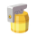
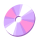

-
#01-01
 Poke Ball × 10From Taunie/UrbainThis is a reward or hand-in, not a fixed collectible map marker.Quest / person reward
Poke Ball × 10From Taunie/UrbainThis is a reward or hand-in, not a fixed collectible map marker.Quest / person reward -
#01-02
Poke Ball × 10From Taunie/UrbainThis is a reward or hand-in, not a fixed collectible map marker.Quest / person reward
-
#01-03
 Potion × 5From trainer in Wild ZoneThis is a reward or hand-in, not a fixed collectible map marker.Quest / person reward
Potion × 5From trainer in Wild ZoneThis is a reward or hand-in, not a fixed collectible map marker.Quest / person reward -
#01-04
Poke Ball × 1On floor by benchA written clue exists; its exact point and climb entrance remain unconfirmed.Landmark / access clue
-
#01-05
Lumiose GaletteFrom vendor in Wild ZoneThis is a reward or hand-in, not a fixed collectible map marker.Quest / person reward
-
#01-06
ReviveUnder rocksA written clue exists; its exact point and climb entrance remain unconfirmed.Landmark / access clue
-
#01-07
Poke BallListed in this Wild Zone; check the exact map pinNo exact item coordinate was preserved in the exported guide.Zone known; exact pin missing
-
#01-08
ReviveListed in this Wild Zone; check the exact map pinNo exact item coordinate was preserved in the exported guide.Zone known; exact pin missing
-
#01-09
ReviveListed in this Wild Zone; check the exact map pinNo exact item coordinate was preserved in the exported guide.Zone known; exact pin missing
-
#01-10
PotionListed in this Wild Zone; check the exact map pinNo exact item coordinate was preserved in the exported guide.Zone known; exact pin missing
-
#01-11
 TM103Listed in this Wild Zone; check the exact map pinNo exact item coordinate was preserved in the exported guide.Zone known; exact pin missing
TM103Listed in this Wild Zone; check the exact map pinNo exact item coordinate was preserved in the exported guide.Zone known; exact pin missing
COLLECT / THE ITEM ATLAS
Leave no pickup behind.
Browse every record preserved in the owner's 28-page Item Atlas PDF, including the original item artwork and clues. Search by Pokémon item, Wild Zone or named sector. An entry number is a checklist number—not a confirmed map coordinate.
What the guide can confirm—and what still needs a map
We have restored the owner's source listings, not invented coordinates. These five labels tell you what each entry actually represents:
154Zone-only listingsItem is named, but no precise location survives in the PDF
56Hidden-item outcomesPDF percentages; possible finds, not 56 fixed item points
21Written landmarksSuch as stairs, roofs, rivers or trees; coordinates still unconfirmed
23Sector-level cluesA named area, not an exact pin on the building
10NPC/mission rewardsObtained from a person, side mission or request
Confirmed item coordinates in this exported source: 0. No item marker is described as “exact” until we have a verified sector map, screenshot or equivalent first-hand placement record. Numbered records still let us track which items require that evidence.
All 20 Wild Zones · original item listings
Search by item name or hint, filter by zone and evidence type, then open the existing guide's saved item checklist to tick what you've collected. This standalone fieldbook does not create a second progress system or clear existing checkmarks.
Showing 264 of 264 original records
No records match these filters. Remove a filter or try another item name.
-
#02-01
 TM027By tree next to lakeA written clue exists; its exact point and climb entrance remain unconfirmed.Landmark / access clue
TM027By tree next to lakeA written clue exists; its exact point and climb entrance remain unconfirmed.Landmark / access clue -
#02-02
 Heal BallListed in this Wild Zone; check the exact map pinNo exact item coordinate was preserved in the exported guide.Zone known; exact pin missing
Heal BallListed in this Wild Zone; check the exact map pinNo exact item coordinate was preserved in the exported guide.Zone known; exact pin missing -
#02-03
 Full HealListed in this Wild Zone; check the exact map pinNo exact item coordinate was preserved in the exported guide.Zone known; exact pin missing
Full HealListed in this Wild Zone; check the exact map pinNo exact item coordinate was preserved in the exported guide.Zone known; exact pin missing -
#02-04
PotionListed in this Wild Zone; check the exact map pinNo exact item coordinate was preserved in the exported guide.Zone known; exact pin missing
-
#02-05
 Exp. Candy SListed in this Wild Zone; check the exact map pinNo exact item coordinate was preserved in the exported guide.Zone known; exact pin missing
Exp. Candy SListed in this Wild Zone; check the exact map pinNo exact item coordinate was preserved in the exported guide.Zone known; exact pin missing -
#02-06
 Great BallListed in this Wild Zone; check the exact map pinNo exact item coordinate was preserved in the exported guide.Zone known; exact pin missing
Great BallListed in this Wild Zone; check the exact map pinNo exact item coordinate was preserved in the exported guide.Zone known; exact pin missing
-
#03-01
 Nest BallListed in this Wild Zone; check the exact map pinNo exact item coordinate was preserved in the exported guide.Zone known; exact pin missing
Nest BallListed in this Wild Zone; check the exact map pinNo exact item coordinate was preserved in the exported guide.Zone known; exact pin missing -
#03-02
 Paralyze HealListed in this Wild Zone; check the exact map pinNo exact item coordinate was preserved in the exported guide.Zone known; exact pin missing
Paralyze HealListed in this Wild Zone; check the exact map pinNo exact item coordinate was preserved in the exported guide.Zone known; exact pin missing -
#03-03

AntidoteListed in this Wild Zone; check the exact map pinNo exact item coordinate was preserved in the exported guide.Zone known; exact pin missing -
#03-04
ReviveListed in this Wild Zone; check the exact map pinNo exact item coordinate was preserved in the exported guide.Zone known; exact pin missing
-
#03-05
Great BallListed in this Wild Zone; check the exact map pinNo exact item coordinate was preserved in the exported guide.Zone known; exact pin missing
-
#03-06
 PearlListed in this Wild Zone; check the exact map pinNo exact item coordinate was preserved in the exported guide.Zone known; exact pin missing
PearlListed in this Wild Zone; check the exact map pinNo exact item coordinate was preserved in the exported guide.Zone known; exact pin missing -
#03-07
 Super PotionListed in this Wild Zone; check the exact map pinNo exact item coordinate was preserved in the exported guide.Zone known; exact pin missing
Super PotionListed in this Wild Zone; check the exact map pinNo exact item coordinate was preserved in the exported guide.Zone known; exact pin missing -
#03-08
 TM022On roof of buildingA written clue exists; its exact point and climb entrance remain unconfirmed.Landmark / access clue
TM022On roof of buildingA written clue exists; its exact point and climb entrance remain unconfirmed.Landmark / access clue
-
#04-01
 Cherished RingDefeat Sableye during RequestThis is a reward or hand-in, not a fixed collectible map marker.Quest / person reward
Cherished RingDefeat Sableye during RequestThis is a reward or hand-in, not a fixed collectible map marker.Quest / person reward -
#04-02
Full HealListed in this Wild Zone; check the exact map pinNo exact item coordinate was preserved in the exported guide.Zone known; exact pin missing
-
#04-03
 TM072Behind BuildingA written clue exists; its exact point and climb entrance remain unconfirmed.Landmark / access clue
TM072Behind BuildingA written clue exists; its exact point and climb entrance remain unconfirmed.Landmark / access clue -
#04-04
 Dusk BallListed in this Wild Zone; check the exact map pinNo exact item coordinate was preserved in the exported guide.Zone known; exact pin missing
Dusk BallListed in this Wild Zone; check the exact map pinNo exact item coordinate was preserved in the exported guide.Zone known; exact pin missing -
#04-05
Heal BallListed in this Wild Zone; check the exact map pinNo exact item coordinate was preserved in the exported guide.Zone known; exact pin missing
-
#04-06
PearlListed in this Wild Zone; check the exact map pinNo exact item coordinate was preserved in the exported guide.Zone known; exact pin missing
-
#04-07
AntidoteListed in this Wild Zone; check the exact map pinNo exact item coordinate was preserved in the exported guide.Zone known; exact pin missing
-
#04-08
ReviveListed in this Wild Zone; check the exact map pinNo exact item coordinate was preserved in the exported guide.Zone known; exact pin missing
-
#04-09
Great BallListed in this Wild Zone; check the exact map pinNo exact item coordinate was preserved in the exported guide.Zone known; exact pin missing
-
#04-10
 Net BallListed in this Wild Zone; check the exact map pinNo exact item coordinate was preserved in the exported guide.Zone known; exact pin missing
Net BallListed in this Wild Zone; check the exact map pinNo exact item coordinate was preserved in the exported guide.Zone known; exact pin missing -
#04-11
Super PotionListed in this Wild Zone; check the exact map pinNo exact item coordinate was preserved in the exported guide.Zone known; exact pin missing
-
#05-01
 Revitalizing TwigIn north east area, up some starsA written clue exists; its exact point and climb entrance remain unconfirmed.Landmark / access clue
Revitalizing TwigIn north east area, up some starsA written clue exists; its exact point and climb entrance remain unconfirmed.Landmark / access clue -
#05-02
Paralyze HealIn Bleu Sector 1 areaOnly an area-level sector clue is recorded. Item point is not confirmed.Sector-area clue
-
#05-03
AntidoteIn Bleu Sector 1 areaOnly an area-level sector clue is recorded. Item point is not confirmed.Sector-area clue
-
#05-04
ReviveIn Bleu Sector 1 areaOnly an area-level sector clue is recorded. Item point is not confirmed.Sector-area clue
-
#05-05
ReviveIn Bleu Sector 1 areaOnly an area-level sector clue is recorded. Item point is not confirmed.Sector-area clue
-
#05-06
CarbosIn Bleu Sector 1 areaOnly an area-level sector clue is recorded. Item point is not confirmed.Sector-area clue
-
#05-07
AntidoteIn Bleu Sector 1 areaOnly an area-level sector clue is recorded. Item point is not confirmed.Sector-area clue
-
#05-08
TM040In Bleu Sector 1 areaOnly an area-level sector clue is recorded. Item point is not confirmed.Sector-area clue
-
#05-09
 ZincIn Bleu Sector 1 areaOnly an area-level sector clue is recorded. Item point is not confirmed.Sector-area clue
ZincIn Bleu Sector 1 areaOnly an area-level sector clue is recorded. Item point is not confirmed.Sector-area clue -
#05-10
Great BallIn Bleu Sector 1 areaOnly an area-level sector clue is recorded. Item point is not confirmed.Sector-area clue
-
#05-11
 Exp. Candy MIn Bleu Sector 1 areaOnly an area-level sector clue is recorded. Item point is not confirmed.Sector-area clue
Exp. Candy MIn Bleu Sector 1 areaOnly an area-level sector clue is recorded. Item point is not confirmed.Sector-area clue -
#05-12
 Timer BallIn Bleu Sector 1 areaOnly an area-level sector clue is recorded. Item point is not confirmed.Sector-area clue
Timer BallIn Bleu Sector 1 areaOnly an area-level sector clue is recorded. Item point is not confirmed.Sector-area clue -
#05-13
Max ReviveIn Bleu Sector 1 areaOnly an area-level sector clue is recorded. Item point is not confirmed.Sector-area clue
-
#05-14
Paralyze HealIn Bleu Sector 1 areaOnly an area-level sector clue is recorded. Item point is not confirmed.Sector-area clue
-
#05-15
Timer BallIn tunnel under the roadA written clue exists; its exact point and climb entrance remain unconfirmed.Landmark / access clue
-
#05-16
 Luxury BallIn tunnel under the roadA written clue exists; its exact point and climb entrance remain unconfirmed.Landmark / access clue
Luxury BallIn tunnel under the roadA written clue exists; its exact point and climb entrance remain unconfirmed.Landmark / access clue -
#05-17
ReviveIn Bleu Sector 2 areaOnly an area-level sector clue is recorded. Item point is not confirmed.Sector-area clue
-
#05-18
Great BallIn Bleu Sector 2 areaOnly an area-level sector clue is recorded. Item point is not confirmed.Sector-area clue
-
#05-19
Leaf StoneIn Bleu Sector 2 areaOnly an area-level sector clue is recorded. Item point is not confirmed.Sector-area clue
-
#05-20
Great BallIn Bleu Sector 2 areaOnly an area-level sector clue is recorded. Item point is not confirmed.Sector-area clue
-
#05-21
ReviveIn Bleu Sector 2 areaOnly an area-level sector clue is recorded. Item point is not confirmed.Sector-area clue
-
#05-22
Full HealIn Bleu Sector 2 areaOnly an area-level sector clue is recorded. Item point is not confirmed.Sector-area clue
-
#05-23
Full HealIn Bleu Sector 2 areaOnly an area-level sector clue is recorded. Item point is not confirmed.Sector-area clue
-
#05-24
PearlIn Bleu Sector 2 areaOnly an area-level sector clue is recorded. Item point is not confirmed.Sector-area clue
-
#05-25
Timer BallIn Bleu Sector 2 areaOnly an area-level sector clue is recorded. Item point is not confirmed.Sector-area clue
-
#05-26
Super PotionIn Bleu Sector 2 areaOnly an area-level sector clue is recorded. Item point is not confirmed.Sector-area clue
-
#06-01
Luxury BallListed in this Wild Zone; check the exact map pinNo exact item coordinate was preserved in the exported guide.Zone known; exact pin missing
-
#06-02
 NuggetListed in this Wild Zone; check the exact map pinNo exact item coordinate was preserved in the exported guide.Zone known; exact pin missing
NuggetListed in this Wild Zone; check the exact map pinNo exact item coordinate was preserved in the exported guide.Zone known; exact pin missing -
#06-03
Great BallListed in this Wild Zone; check the exact map pinNo exact item coordinate was preserved in the exported guide.Zone known; exact pin missing
-
#06-04
Paralyze HealListed in this Wild Zone; check the exact map pinNo exact item coordinate was preserved in the exported guide.Zone known; exact pin missing
-
#06-05
Super PotionListed in this Wild Zone; check the exact map pinNo exact item coordinate was preserved in the exported guide.Zone known; exact pin missing
-
#06-06
PearlListed in this Wild Zone; check the exact map pinNo exact item coordinate was preserved in the exported guide.Zone known; exact pin missing
-
#06-07
 TM041Listed in this Wild Zone; check the exact map pinNo exact item coordinate was preserved in the exported guide.Zone known; exact pin missing
TM041Listed in this Wild Zone; check the exact map pinNo exact item coordinate was preserved in the exported guide.Zone known; exact pin missing -
#06-08
TM158Defeat ArcannesThis is a reward or hand-in, not a fixed collectible map marker.Quest / person reward
-
#06-09
TM159Defeat ArcannesThis is a reward or hand-in, not a fixed collectible map marker.Quest / person reward
-
#06-10
TM160Defeat ArcannesThis is a reward or hand-in, not a fixed collectible map marker.Quest / person reward
-
#07-01
Net BallListed in this Wild Zone; check the exact map pinNo exact item coordinate was preserved in the exported guide.Zone known; exact pin missing
-
#07-02
Dive BallListed in this Wild Zone; check the exact map pinNo exact item coordinate was preserved in the exported guide.Zone known; exact pin missing
-
#07-03
Exp. Candy MListed in this Wild Zone; check the exact map pinNo exact item coordinate was preserved in the exported guide.Zone known; exact pin missing
-
#07-04
Great BallListed in this Wild Zone; check the exact map pinNo exact item coordinate was preserved in the exported guide.Zone known; exact pin missing
-
#07-05
 TM092Listed in this Wild Zone; check the exact map pinNo exact item coordinate was preserved in the exported guide.Zone known; exact pin missing
TM092Listed in this Wild Zone; check the exact map pinNo exact item coordinate was preserved in the exported guide.Zone known; exact pin missing
-
#08-01
Great BallListed in this Wild Zone; check the exact map pinNo exact item coordinate was preserved in the exported guide.Zone known; exact pin missing
-
#08-02
Hyper PotionListed in this Wild Zone; check the exact map pinNo exact item coordinate was preserved in the exported guide.Zone known; exact pin missing
-
#08-03
Heal BallListed in this Wild Zone; check the exact map pinNo exact item coordinate was preserved in the exported guide.Zone known; exact pin missing
-
#08-04
 TM036Listed in this Wild Zone; check the exact map pinNo exact item coordinate was preserved in the exported guide.Zone known; exact pin missing
TM036Listed in this Wild Zone; check the exact map pinNo exact item coordinate was preserved in the exported guide.Zone known; exact pin missing
-
#09-01
Nest BallListed in this Wild Zone; check the exact map pinNo exact item coordinate was preserved in the exported guide.Zone known; exact pin missing
-
#09-02
NuggetListed in this Wild Zone; check the exact map pinNo exact item coordinate was preserved in the exported guide.Zone known; exact pin missing
-
#09-03
 Big PearlListed in this Wild Zone; check the exact map pinNo exact item coordinate was preserved in the exported guide.Zone known; exact pin missing
Big PearlListed in this Wild Zone; check the exact map pinNo exact item coordinate was preserved in the exported guide.Zone known; exact pin missing -
#09-04
Big PearlListed in this Wild Zone; check the exact map pinNo exact item coordinate was preserved in the exported guide.Zone known; exact pin missing
-
#09-05
Full HealListed in this Wild Zone; check the exact map pinNo exact item coordinate was preserved in the exported guide.Zone known; exact pin missing
-
#09-06
Timer BallListed in this Wild Zone; check the exact map pinNo exact item coordinate was preserved in the exported guide.Zone known; exact pin missing
-
#09-07
 CalciumListed in this Wild Zone; check the exact map pinNo exact item coordinate was preserved in the exported guide.Zone known; exact pin missing
CalciumListed in this Wild Zone; check the exact map pinNo exact item coordinate was preserved in the exported guide.Zone known; exact pin missing -
#09-08
 Rare CandyListed in this Wild Zone; check the exact map pinNo exact item coordinate was preserved in the exported guide.Zone known; exact pin missing
Rare CandyListed in this Wild Zone; check the exact map pinNo exact item coordinate was preserved in the exported guide.Zone known; exact pin missing -
#09-09
Great BallListed in this Wild Zone; check the exact map pinNo exact item coordinate was preserved in the exported guide.Zone known; exact pin missing
-
#09-10
Net BallListed in this Wild Zone; check the exact map pinNo exact item coordinate was preserved in the exported guide.Zone known; exact pin missing
-
#09-11
Rare CandyListed in this Wild Zone; check the exact map pinNo exact item coordinate was preserved in the exported guide.Zone known; exact pin missing
-
#09-12
Dusk BallListed in this Wild Zone; check the exact map pinNo exact item coordinate was preserved in the exported guide.Zone known; exact pin missing
-
#09-13
Full HealListed in this Wild Zone; check the exact map pinNo exact item coordinate was preserved in the exported guide.Zone known; exact pin missing
-
#09-14
Great BallListed in this Wild Zone; check the exact map pinNo exact item coordinate was preserved in the exported guide.Zone known; exact pin missing
-
#09-15
ZincListed in this Wild Zone; check the exact map pinNo exact item coordinate was preserved in the exported guide.Zone known; exact pin missing
-
#09-16
ReviveListed in this Wild Zone; check the exact map pinNo exact item coordinate was preserved in the exported guide.Zone known; exact pin missing
-
#09-17
Hyper PotionListed in this Wild Zone; check the exact map pinNo exact item coordinate was preserved in the exported guide.Zone known; exact pin missing
-
#09-18
 TM018Listed in this Wild Zone; check the exact map pinNo exact item coordinate was preserved in the exported guide.Zone known; exact pin missing
TM018Listed in this Wild Zone; check the exact map pinNo exact item coordinate was preserved in the exported guide.Zone known; exact pin missing -
#09-19
 ProteinListed in this Wild Zone; check the exact map pinNo exact item coordinate was preserved in the exported guide.Zone known; exact pin missing
ProteinListed in this Wild Zone; check the exact map pinNo exact item coordinate was preserved in the exported guide.Zone known; exact pin missing -
#09-20
Nest BallListed in this Wild Zone; check the exact map pinNo exact item coordinate was preserved in the exported guide.Zone known; exact pin missing
-
#09-21
Big PearlListed in this Wild Zone; check the exact map pinNo exact item coordinate was preserved in the exported guide.Zone known; exact pin missing
-
#09-22
PearlListed in this Wild Zone; check the exact map pinNo exact item coordinate was preserved in the exported guide.Zone known; exact pin missing
-
#09-23
Colorful ScrewListed in this Wild Zone; check the exact map pinNo exact item coordinate was preserved in the exported guide.Zone known; exact pin missing
-
#09-24
Paralyze HealListed in this Wild Zone; check the exact map pinNo exact item coordinate was preserved in the exported guide.Zone known; exact pin missing
-
#10-01
 Ultra BallListed in this Wild Zone; check the exact map pinNo exact item coordinate was preserved in the exported guide.Zone known; exact pin missing
Ultra BallListed in this Wild Zone; check the exact map pinNo exact item coordinate was preserved in the exported guide.Zone known; exact pin missing -
#10-02
 Quick BallListed in this Wild Zone; check the exact map pinNo exact item coordinate was preserved in the exported guide.Zone known; exact pin missing
Quick BallListed in this Wild Zone; check the exact map pinNo exact item coordinate was preserved in the exported guide.Zone known; exact pin missing -
#10-03
Great BallListed in this Wild Zone; check the exact map pinNo exact item coordinate was preserved in the exported guide.Zone known; exact pin missing
-
#10-04
ReviveListed in this Wild Zone; check the exact map pinNo exact item coordinate was preserved in the exported guide.Zone known; exact pin missing
-
#10-05
Hyper PotionListed in this Wild Zone; check the exact map pinNo exact item coordinate was preserved in the exported guide.Zone known; exact pin missing
-
#10-06
Timer BallListed in this Wild Zone; check the exact map pinNo exact item coordinate was preserved in the exported guide.Zone known; exact pin missing
-
#10-07
Hyper PotionListed in this Wild Zone; check the exact map pinNo exact item coordinate was preserved in the exported guide.Zone known; exact pin missing
-
#10-08

TM034Listed in this Wild Zone; check the exact map pinNo exact item coordinate was preserved in the exported guide.Zone known; exact pin missing -
#10-09
Dive BallListed in this Wild Zone; check the exact map pinNo exact item coordinate was preserved in the exported guide.Zone known; exact pin missing
-
#10-10
NuggetListed in this Wild Zone; check the exact map pinNo exact item coordinate was preserved in the exported guide.Zone known; exact pin missing
-
#10-11
Big PearlListed in this Wild Zone; check the exact map pinNo exact item coordinate was preserved in the exported guide.Zone known; exact pin missing
-
#10-12
Ultra BallListed in this Wild Zone; check the exact map pinNo exact item coordinate was preserved in the exported guide.Zone known; exact pin missing
-
#11-01
Exp. Candy M × 1Alongside rock and cliff in the eastA written clue exists; its exact point and climb entrance remain unconfirmed.Landmark / access clue
-
#11-02
Dive Ball × 1Alongside tree in north eastA written clue exists; its exact point and climb entrance remain unconfirmed.Landmark / access clue
-
#11-03
Big Pearl × 1Alongside stairs in north westA written clue exists; its exact point and climb entrance remain unconfirmed.Landmark / access clue
-
#11-04
Net Ball × 1Alongside lamp in the southA written clue exists; its exact point and climb entrance remain unconfirmed.Landmark / access clue
-
#11-05
Ultra Ball × 1On hill by south west exitA written clue exists; its exact point and climb entrance remain unconfirmed.Landmark / access clue
-
#11-06
Nugget × 1Alongside river in south westA written clue exists; its exact point and climb entrance remain unconfirmed.Landmark / access clue
-
#11-07
Timer BallListed in this Wild Zone; check the exact map pinNo exact item coordinate was preserved in the exported guide.Zone known; exact pin missing
-
#11-08
Exp. Candy MIn the northern areaA written clue exists; its exact point and climb entrance remain unconfirmed.Landmark / access clue
-
#11-09
Dive BallIn the northern areaA written clue exists; its exact point and climb entrance remain unconfirmed.Landmark / access clue
-
#11-10
 TM063In the northern areaA written clue exists; its exact point and climb entrance remain unconfirmed.Landmark / access clue
TM063In the northern areaA written clue exists; its exact point and climb entrance remain unconfirmed.Landmark / access clue -
#11-11
 Max PotionIn the northern areaA written clue exists; its exact point and climb entrance remain unconfirmed.Landmark / access clue
Max PotionIn the northern areaA written clue exists; its exact point and climb entrance remain unconfirmed.Landmark / access clue -
#11-12
 Seed of Mastery Z-ABehind hut along the south wallA written clue exists; its exact point and climb entrance remain unconfirmed.Landmark / access clue
Seed of Mastery Z-ABehind hut along the south wallA written clue exists; its exact point and climb entrance remain unconfirmed.Landmark / access clue
-
#12-01
Dive BallListed in this Wild Zone; check the exact map pinNo exact item coordinate was preserved in the exported guide.Zone known; exact pin missing
-
#12-02
Dusk BallListed in this Wild Zone; check the exact map pinNo exact item coordinate was preserved in the exported guide.Zone known; exact pin missing
-
#12-03
Super PotionListed in this Wild Zone; check the exact map pinNo exact item coordinate was preserved in the exported guide.Zone known; exact pin missing
-
#12-04
ReviveListed in this Wild Zone; check the exact map pinNo exact item coordinate was preserved in the exported guide.Zone known; exact pin missing
-
#12-05
Paralyze HealListed in this Wild Zone; check the exact map pinNo exact item coordinate was preserved in the exported guide.Zone known; exact pin missing
-
#12-06
 Repeat BallListed in this Wild Zone; check the exact map pinNo exact item coordinate was preserved in the exported guide.Zone known; exact pin missing
Repeat BallListed in this Wild Zone; check the exact map pinNo exact item coordinate was preserved in the exported guide.Zone known; exact pin missing -
#12-07
 Ice StoneListed in this Wild Zone; check the exact map pinNo exact item coordinate was preserved in the exported guide.Zone known; exact pin missing
Ice StoneListed in this Wild Zone; check the exact map pinNo exact item coordinate was preserved in the exported guide.Zone known; exact pin missing -
#12-08
Quick BallListed in this Wild Zone; check the exact map pinNo exact item coordinate was preserved in the exported guide.Zone known; exact pin missing
-
#12-09
Nest BallListed in this Wild Zone; check the exact map pinNo exact item coordinate was preserved in the exported guide.Zone known; exact pin missing
-
#12-10
Ultra BallListed in this Wild Zone; check the exact map pinNo exact item coordinate was preserved in the exported guide.Zone known; exact pin missing
-
#12-11
 TM013Listed in this Wild Zone; check the exact map pinNo exact item coordinate was preserved in the exported guide.Zone known; exact pin missing
TM013Listed in this Wild Zone; check the exact map pinNo exact item coordinate was preserved in the exported guide.Zone known; exact pin missing
-
#13-01
Exp. Candy MListed in this Wild Zone; check the exact map pinNo exact item coordinate was preserved in the exported guide.Zone known; exact pin missing
-
#13-02
Big PearlListed in this Wild Zone; check the exact map pinNo exact item coordinate was preserved in the exported guide.Zone known; exact pin missing
-
#13-03
Great BallListed in this Wild Zone; check the exact map pinNo exact item coordinate was preserved in the exported guide.Zone known; exact pin missing
-
#13-04
 TM081Listed in this Wild Zone; check the exact map pinNo exact item coordinate was preserved in the exported guide.Zone known; exact pin missing
TM081Listed in this Wild Zone; check the exact map pinNo exact item coordinate was preserved in the exported guide.Zone known; exact pin missing -
#13-05
Hyper PotionListed in this Wild Zone; check the exact map pinNo exact item coordinate was preserved in the exported guide.Zone known; exact pin missing
-
#13-06
Ultra BallListed in this Wild Zone; check the exact map pinNo exact item coordinate was preserved in the exported guide.Zone known; exact pin missing
-
#13-07
Dive BallListed in this Wild Zone; check the exact map pinNo exact item coordinate was preserved in the exported guide.Zone known; exact pin missing
-
#13-08
Luxury BallListed in this Wild Zone; check the exact map pinNo exact item coordinate was preserved in the exported guide.Zone known; exact pin missing
-
#14-01
Seed of Mastery Z-ABehind building in eastA written clue exists; its exact point and climb entrance remain unconfirmed.Landmark / access clue
-
#14-02
NuggetListed in this Wild Zone; check the exact map pinNo exact item coordinate was preserved in the exported guide.Zone known; exact pin missing
-
#14-03
Luxury BallListed in this Wild Zone; check the exact map pinNo exact item coordinate was preserved in the exported guide.Zone known; exact pin missing
-
#14-04
Max ReviveListed in this Wild Zone; check the exact map pinNo exact item coordinate was preserved in the exported guide.Zone known; exact pin missing
-
#14-05
Ultra BallListed in this Wild Zone; check the exact map pinNo exact item coordinate was preserved in the exported guide.Zone known; exact pin missing
-
#14-06
Full HealListed in this Wild Zone; check the exact map pinNo exact item coordinate was preserved in the exported guide.Zone known; exact pin missing
-
#14-07
TM039Behind rocks in southern cornerA written clue exists; its exact point and climb entrance remain unconfirmed.Landmark / access clue
-
#14-08
CalciumListed in this Wild Zone; check the exact map pinNo exact item coordinate was preserved in the exported guide.Zone known; exact pin missing
-
#15-01
Ultra BallListed in this Wild Zone; check the exact map pinNo exact item coordinate was preserved in the exported guide.Zone known; exact pin missing
-
#15-02
NuggetListed in this Wild Zone; check the exact map pinNo exact item coordinate was preserved in the exported guide.Zone known; exact pin missing
-
#15-03
Super PotionListed in this Wild Zone; check the exact map pinNo exact item coordinate was preserved in the exported guide.Zone known; exact pin missing
-
#15-04
Timer BallListed in this Wild Zone; check the exact map pinNo exact item coordinate was preserved in the exported guide.Zone known; exact pin missing
-
#15-05
TM052Listed in this Wild Zone; check the exact map pinNo exact item coordinate was preserved in the exported guide.Zone known; exact pin missing
-
#15-06
 Burn HealListed in this Wild Zone; check the exact map pinNo exact item coordinate was preserved in the exported guide.Zone known; exact pin missing
Burn HealListed in this Wild Zone; check the exact map pinNo exact item coordinate was preserved in the exported guide.Zone known; exact pin missing -
#15-07
Dusk BallListed in this Wild Zone; check the exact map pinNo exact item coordinate was preserved in the exported guide.Zone known; exact pin missing
-
#16-01
 Moon StoneOn floor after Starmie On High requestThis is a reward or hand-in, not a fixed collectible map marker.Quest / person reward
Moon StoneOn floor after Starmie On High requestThis is a reward or hand-in, not a fixed collectible map marker.Quest / person reward -
#16-02
 TM076Listed in this Wild Zone; check the exact map pinNo exact item coordinate was preserved in the exported guide.Zone known; exact pin missing
TM076Listed in this Wild Zone; check the exact map pinNo exact item coordinate was preserved in the exported guide.Zone known; exact pin missing -
#16-03
Luxury BallListed in this Wild Zone; check the exact map pinNo exact item coordinate was preserved in the exported guide.Zone known; exact pin missing
-
#16-04
Dusk BallListed in this Wild Zone; check the exact map pinNo exact item coordinate was preserved in the exported guide.Zone known; exact pin missing
-
#16-05
Quick BallListed in this Wild Zone; check the exact map pinNo exact item coordinate was preserved in the exported guide.Zone known; exact pin missing
-
#16-06
Rare CandyListed in this Wild Zone; check the exact map pinNo exact item coordinate was preserved in the exported guide.Zone known; exact pin missing
-
#16-07
Heal BallListed in this Wild Zone; check the exact map pinNo exact item coordinate was preserved in the exported guide.Zone known; exact pin missing
-
#16-08
Big PearlListed in this Wild Zone; check the exact map pinNo exact item coordinate was preserved in the exported guide.Zone known; exact pin missing
-
#16-09
Ultra BallListed in this Wild Zone; check the exact map pinNo exact item coordinate was preserved in the exported guide.Zone known; exact pin missing
-
#17-01
Ultra BallListed in this Wild Zone; check the exact map pinNo exact item coordinate was preserved in the exported guide.Zone known; exact pin missing
-
#17-02
Dusk BallListed in this Wild Zone; check the exact map pinNo exact item coordinate was preserved in the exported guide.Zone known; exact pin missing
-
#17-03
Rare CandyListed in this Wild Zone; check the exact map pinNo exact item coordinate was preserved in the exported guide.Zone known; exact pin missing
-
#17-04
Max ReviveListed in this Wild Zone; check the exact map pinNo exact item coordinate was preserved in the exported guide.Zone known; exact pin missing
-
#17-05
 Big NuggetListed in this Wild Zone; check the exact map pinNo exact item coordinate was preserved in the exported guide.Zone known; exact pin missing
Big NuggetListed in this Wild Zone; check the exact map pinNo exact item coordinate was preserved in the exported guide.Zone known; exact pin missing -
#17-06
PotionListed in this Wild Zone; check the exact map pinNo exact item coordinate was preserved in the exported guide.Zone known; exact pin missing
-
#17-07
 TM062Listed in this Wild Zone; check the exact map pinNo exact item coordinate was preserved in the exported guide.Zone known; exact pin missing
TM062Listed in this Wild Zone; check the exact map pinNo exact item coordinate was preserved in the exported guide.Zone known; exact pin missing
-
#18-01
Burn HealListed in this Wild Zone; check the exact map pinNo exact item coordinate was preserved in the exported guide.Zone known; exact pin missing
-
#18-02
Timer BallListed in this Wild Zone; check the exact map pinNo exact item coordinate was preserved in the exported guide.Zone known; exact pin missing
-
#18-03
Big NuggetListed in this Wild Zone; check the exact map pinNo exact item coordinate was preserved in the exported guide.Zone known; exact pin missing
-
#18-04
Hyper PotionListed in this Wild Zone; check the exact map pinNo exact item coordinate was preserved in the exported guide.Zone known; exact pin missing
-
#18-05
Seed of Mastery Z-AListed in this Wild Zone; check the exact map pinNo exact item coordinate was preserved in the exported guide.Zone known; exact pin missing
-
#18-06
Quick BallListed in this Wild Zone; check the exact map pinNo exact item coordinate was preserved in the exported guide.Zone known; exact pin missing
-
#18-07
Rare CandyListed in this Wild Zone; check the exact map pinNo exact item coordinate was preserved in the exported guide.Zone known; exact pin missing
-
#18-08
 TM065Listed in this Wild Zone; check the exact map pinNo exact item coordinate was preserved in the exported guide.Zone known; exact pin missing
TM065Listed in this Wild Zone; check the exact map pinNo exact item coordinate was preserved in the exported guide.Zone known; exact pin missing -
#18-09
 IronListed in this Wild Zone; check the exact map pinNo exact item coordinate was preserved in the exported guide.Zone known; exact pin missing
IronListed in this Wild Zone; check the exact map pinNo exact item coordinate was preserved in the exported guide.Zone known; exact pin missing -
#18-10
CarbosListed in this Wild Zone; check the exact map pinNo exact item coordinate was preserved in the exported guide.Zone known; exact pin missing
-
#19-01
Full HealListed in this Wild Zone; check the exact map pinNo exact item coordinate was preserved in the exported guide.Zone known; exact pin missing
-
#19-02
Ultra BallListed in this Wild Zone; check the exact map pinNo exact item coordinate was preserved in the exported guide.Zone known; exact pin missing
-
#19-03
NuggetListed in this Wild Zone; check the exact map pinNo exact item coordinate was preserved in the exported guide.Zone known; exact pin missing
-
#19-04
Quick BallListed in this Wild Zone; check the exact map pinNo exact item coordinate was preserved in the exported guide.Zone known; exact pin missing
-
#19-05
Repeat BallListed in this Wild Zone; check the exact map pinNo exact item coordinate was preserved in the exported guide.Zone known; exact pin missing
-
#19-06
Luxury BallListed in this Wild Zone; check the exact map pinNo exact item coordinate was preserved in the exported guide.Zone known; exact pin missing
-
#19-07
Rare CandyListed in this Wild Zone; check the exact map pinNo exact item coordinate was preserved in the exported guide.Zone known; exact pin missing
-
#19-08
Super PotionListed in this Wild Zone; check the exact map pinNo exact item coordinate was preserved in the exported guide.Zone known; exact pin missing
-
#19-09
 TM079Listed in this Wild Zone; check the exact map pinNo exact item coordinate was preserved in the exported guide.Zone known; exact pin missing
TM079Listed in this Wild Zone; check the exact map pinNo exact item coordinate was preserved in the exported guide.Zone known; exact pin missing
-
#20-01
 Zygarde CubeGiven by L after catching ZygardeThis is a reward or hand-in, not a fixed collectible map marker.Quest / person reward
Zygarde CubeGiven by L after catching ZygardeThis is a reward or hand-in, not a fixed collectible map marker.Quest / person reward -
#20-02
Tiny MushroomHidden - 20.09% ChanceThis is a possible hidden-item result with the printed chance—not one guaranteed pickup point.Possible hidden outcome
-
#20-03
 Pretty FeatherHidden - 17.08% ChanceThis is a possible hidden-item result with the printed chance—not one guaranteed pickup point.Possible hidden outcome
Pretty FeatherHidden - 17.08% ChanceThis is a possible hidden-item result with the printed chance—not one guaranteed pickup point.Possible hidden outcome -
#20-04
 Cheri BerryHidden - 6.03% ChanceThis is a possible hidden-item result with the printed chance—not one guaranteed pickup point.Possible hidden outcome
Cheri BerryHidden - 6.03% ChanceThis is a possible hidden-item result with the printed chance—not one guaranteed pickup point.Possible hidden outcome -
#20-05
 Chesto BerryHidden - 6.03% ChanceThis is a possible hidden-item result with the printed chance—not one guaranteed pickup point.Possible hidden outcome
Chesto BerryHidden - 6.03% ChanceThis is a possible hidden-item result with the printed chance—not one guaranteed pickup point.Possible hidden outcome -
#20-06
Pecha BerryHidden - 6.03% ChanceThis is a possible hidden-item result with the printed chance—not one guaranteed pickup point.Possible hidden outcome
-
#20-07
 Rawst BerryHidden - 6.03% ChanceThis is a possible hidden-item result with the printed chance—not one guaranteed pickup point.Possible hidden outcome
Rawst BerryHidden - 6.03% ChanceThis is a possible hidden-item result with the printed chance—not one guaranteed pickup point.Possible hidden outcome -
#20-08
Aspear BerryHidden - 6.03% ChanceThis is a possible hidden-item result with the printed chance—not one guaranteed pickup point.Possible hidden outcome
-
#20-09
Oran BerryHidden - 6.03% ChanceThis is a possible hidden-item result with the printed chance—not one guaranteed pickup point.Possible hidden outcome
-
#20-10
 Persim BerryHidden - 2.01% ChanceThis is a possible hidden-item result with the printed chance—not one guaranteed pickup point.Possible hidden outcome
Persim BerryHidden - 2.01% ChanceThis is a possible hidden-item result with the printed chance—not one guaranteed pickup point.Possible hidden outcome -
#20-11
 Lum BerryHidden - 2.01% ChanceThis is a possible hidden-item result with the printed chance—not one guaranteed pickup point.Possible hidden outcome
Lum BerryHidden - 2.01% ChanceThis is a possible hidden-item result with the printed chance—not one guaranteed pickup point.Possible hidden outcome -
#20-12
Sitrus BerryHidden - 2.01% ChanceThis is a possible hidden-item result with the printed chance—not one guaranteed pickup point.Possible hidden outcome
-
#20-13
 Kelpsy BerryHidden - 2.01% ChanceThis is a possible hidden-item result with the printed chance—not one guaranteed pickup point.Possible hidden outcome
Kelpsy BerryHidden - 2.01% ChanceThis is a possible hidden-item result with the printed chance—not one guaranteed pickup point.Possible hidden outcome -
#20-14
 Qualot BerryHidden - 2.01% ChanceThis is a possible hidden-item result with the printed chance—not one guaranteed pickup point.Possible hidden outcome
Qualot BerryHidden - 2.01% ChanceThis is a possible hidden-item result with the printed chance—not one guaranteed pickup point.Possible hidden outcome -
#20-15
 Hondew BerryHidden - 2.01% ChanceThis is a possible hidden-item result with the printed chance—not one guaranteed pickup point.Possible hidden outcome
Hondew BerryHidden - 2.01% ChanceThis is a possible hidden-item result with the printed chance—not one guaranteed pickup point.Possible hidden outcome -
#20-16
 Grepa BerryHidden - 2.01% ChanceThis is a possible hidden-item result with the printed chance—not one guaranteed pickup point.Possible hidden outcome
Grepa BerryHidden - 2.01% ChanceThis is a possible hidden-item result with the printed chance—not one guaranteed pickup point.Possible hidden outcome -
#20-17
Tamato BerryHidden - 2.01% ChanceThis is a possible hidden-item result with the printed chance—not one guaranteed pickup point.Possible hidden outcome
-
#20-18
 Pomeg BerryHidden - 0.5% ChanceThis is a possible hidden-item result with the printed chance—not one guaranteed pickup point.Possible hidden outcome
Pomeg BerryHidden - 0.5% ChanceThis is a possible hidden-item result with the printed chance—not one guaranteed pickup point.Possible hidden outcome -
#20-19
 Occa BerryHidden - 0.5% ChanceThis is a possible hidden-item result with the printed chance—not one guaranteed pickup point.Possible hidden outcome
Occa BerryHidden - 0.5% ChanceThis is a possible hidden-item result with the printed chance—not one guaranteed pickup point.Possible hidden outcome -
#20-20
Passho BerryHidden - 0.5% ChanceThis is a possible hidden-item result with the printed chance—not one guaranteed pickup point.Possible hidden outcome
-
#20-21
 Wacan BerryHidden - 0.5% ChanceThis is a possible hidden-item result with the printed chance—not one guaranteed pickup point.Possible hidden outcome
Wacan BerryHidden - 0.5% ChanceThis is a possible hidden-item result with the printed chance—not one guaranteed pickup point.Possible hidden outcome -
#20-22
 Rindo BerryHidden - 0.5% ChanceThis is a possible hidden-item result with the printed chance—not one guaranteed pickup point.Possible hidden outcome
Rindo BerryHidden - 0.5% ChanceThis is a possible hidden-item result with the printed chance—not one guaranteed pickup point.Possible hidden outcome -
#20-23
 Yache BerryHidden - 0.5% ChanceThis is a possible hidden-item result with the printed chance—not one guaranteed pickup point.Possible hidden outcome
Yache BerryHidden - 0.5% ChanceThis is a possible hidden-item result with the printed chance—not one guaranteed pickup point.Possible hidden outcome -
#20-24
Chople BerryHidden - 0.5% ChanceThis is a possible hidden-item result with the printed chance—not one guaranteed pickup point.Possible hidden outcome
-
#20-25
Kebia BerryHidden - 0.5% ChanceThis is a possible hidden-item result with the printed chance—not one guaranteed pickup point.Possible hidden outcome
-
#20-26
Shuca BerryHidden - 0.5% ChanceThis is a possible hidden-item result with the printed chance—not one guaranteed pickup point.Possible hidden outcome
-
#20-27
 Coba BerryHidden - 0.5% ChanceThis is a possible hidden-item result with the printed chance—not one guaranteed pickup point.Possible hidden outcome
Coba BerryHidden - 0.5% ChanceThis is a possible hidden-item result with the printed chance—not one guaranteed pickup point.Possible hidden outcome -
#20-28
Payapa BerryHidden - 0.5% ChanceThis is a possible hidden-item result with the printed chance—not one guaranteed pickup point.Possible hidden outcome
-
#20-29
 Tanga BerryHidden - 0.5% ChanceThis is a possible hidden-item result with the printed chance—not one guaranteed pickup point.Possible hidden outcome
Tanga BerryHidden - 0.5% ChanceThis is a possible hidden-item result with the printed chance—not one guaranteed pickup point.Possible hidden outcome -
#20-30
 Charti BerryHidden - 0.5% ChanceThis is a possible hidden-item result with the printed chance—not one guaranteed pickup point.Possible hidden outcome
Charti BerryHidden - 0.5% ChanceThis is a possible hidden-item result with the printed chance—not one guaranteed pickup point.Possible hidden outcome -
#20-31
Kasib BerryHidden - 0.5% ChanceThis is a possible hidden-item result with the printed chance—not one guaranteed pickup point.Possible hidden outcome
-
#20-32
 Haban BerryHidden - 0.5% ChanceThis is a possible hidden-item result with the printed chance—not one guaranteed pickup point.Possible hidden outcome
Haban BerryHidden - 0.5% ChanceThis is a possible hidden-item result with the printed chance—not one guaranteed pickup point.Possible hidden outcome -
#20-33
 Colbur BerryHidden - 0.5% ChanceThis is a possible hidden-item result with the printed chance—not one guaranteed pickup point.Possible hidden outcome
Colbur BerryHidden - 0.5% ChanceThis is a possible hidden-item result with the printed chance—not one guaranteed pickup point.Possible hidden outcome -
#20-34
 Babiri BerryHidden - 0.5% ChanceThis is a possible hidden-item result with the printed chance—not one guaranteed pickup point.Possible hidden outcome
Babiri BerryHidden - 0.5% ChanceThis is a possible hidden-item result with the printed chance—not one guaranteed pickup point.Possible hidden outcome -
#20-35
 Chilan BerryHidden - 0.5% ChanceThis is a possible hidden-item result with the printed chance—not one guaranteed pickup point.Possible hidden outcome
Chilan BerryHidden - 0.5% ChanceThis is a possible hidden-item result with the printed chance—not one guaranteed pickup point.Possible hidden outcome -
#20-36
 Roseli BerryHidden - 0.5% ChanceThis is a possible hidden-item result with the printed chance—not one guaranteed pickup point.Possible hidden outcome
Roseli BerryHidden - 0.5% ChanceThis is a possible hidden-item result with the printed chance—not one guaranteed pickup point.Possible hidden outcome -
#20-37
 Lonely MintHidden - 0.05% ChanceThis is a possible hidden-item result with the printed chance—not one guaranteed pickup point.Possible hidden outcome
Lonely MintHidden - 0.05% ChanceThis is a possible hidden-item result with the printed chance—not one guaranteed pickup point.Possible hidden outcome -
#20-38
 Impish MintHidden - 0.05% ChanceThis is a possible hidden-item result with the printed chance—not one guaranteed pickup point.Possible hidden outcome
Impish MintHidden - 0.05% ChanceThis is a possible hidden-item result with the printed chance—not one guaranteed pickup point.Possible hidden outcome -
#20-39
 Rash MintHidden - 0.05% ChanceThis is a possible hidden-item result with the printed chance—not one guaranteed pickup point.Possible hidden outcome
Rash MintHidden - 0.05% ChanceThis is a possible hidden-item result with the printed chance—not one guaranteed pickup point.Possible hidden outcome -
#20-40
 Sassy MintHidden - 0.05% ChanceThis is a possible hidden-item result with the printed chance—not one guaranteed pickup point.Possible hidden outcome
Sassy MintHidden - 0.05% ChanceThis is a possible hidden-item result with the printed chance—not one guaranteed pickup point.Possible hidden outcome -
#20-41
Serious MintHidden - 0.05% ChanceThis is a possible hidden-item result with the printed chance—not one guaranteed pickup point.Possible hidden outcome
-
#20-42
 Adamant MintHidden - 0.05% ChanceThis is a possible hidden-item result with the printed chance—not one guaranteed pickup point.Possible hidden outcome
Adamant MintHidden - 0.05% ChanceThis is a possible hidden-item result with the printed chance—not one guaranteed pickup point.Possible hidden outcome -
#20-43
 Lax MintHidden - 0.05% ChanceThis is a possible hidden-item result with the printed chance—not one guaranteed pickup point.Possible hidden outcome
Lax MintHidden - 0.05% ChanceThis is a possible hidden-item result with the printed chance—not one guaranteed pickup point.Possible hidden outcome -
#20-44
 Quiet MintHidden - 0.05% ChanceThis is a possible hidden-item result with the printed chance—not one guaranteed pickup point.Possible hidden outcome
Quiet MintHidden - 0.05% ChanceThis is a possible hidden-item result with the printed chance—not one guaranteed pickup point.Possible hidden outcome -
#20-45
 Timid MintHidden - 0.05% ChanceThis is a possible hidden-item result with the printed chance—not one guaranteed pickup point.Possible hidden outcome
Timid MintHidden - 0.05% ChanceThis is a possible hidden-item result with the printed chance—not one guaranteed pickup point.Possible hidden outcome -
#20-46
 Naughty MintHidden - 0.05% ChanceThis is a possible hidden-item result with the printed chance—not one guaranteed pickup point.Possible hidden outcome
Naughty MintHidden - 0.05% ChanceThis is a possible hidden-item result with the printed chance—not one guaranteed pickup point.Possible hidden outcome -
#20-47
 Relaxed MintHidden - 0.05% ChanceThis is a possible hidden-item result with the printed chance—not one guaranteed pickup point.Possible hidden outcome
Relaxed MintHidden - 0.05% ChanceThis is a possible hidden-item result with the printed chance—not one guaranteed pickup point.Possible hidden outcome -
#20-48
 Calm MintHidden - 0.05% ChanceThis is a possible hidden-item result with the printed chance—not one guaranteed pickup point.Possible hidden outcome
Calm MintHidden - 0.05% ChanceThis is a possible hidden-item result with the printed chance—not one guaranteed pickup point.Possible hidden outcome -
#20-49
Hasty MintHidden - 0.05% ChanceThis is a possible hidden-item result with the printed chance—not one guaranteed pickup point.Possible hidden outcome
-
#20-50
 Brave MintHidden - 0.05% ChanceThis is a possible hidden-item result with the printed chance—not one guaranteed pickup point.Possible hidden outcome
Brave MintHidden - 0.05% ChanceThis is a possible hidden-item result with the printed chance—not one guaranteed pickup point.Possible hidden outcome -
#20-51
 Modest MintHidden - 0.05% ChanceThis is a possible hidden-item result with the printed chance—not one guaranteed pickup point.Possible hidden outcome
Modest MintHidden - 0.05% ChanceThis is a possible hidden-item result with the printed chance—not one guaranteed pickup point.Possible hidden outcome -
#20-52
 Gentle MintHidden - 0.05% ChanceThis is a possible hidden-item result with the printed chance—not one guaranteed pickup point.Possible hidden outcome
Gentle MintHidden - 0.05% ChanceThis is a possible hidden-item result with the printed chance—not one guaranteed pickup point.Possible hidden outcome -
#20-53
 Jolly MintHidden - 0.05% ChanceThis is a possible hidden-item result with the printed chance—not one guaranteed pickup point.Possible hidden outcome
Jolly MintHidden - 0.05% ChanceThis is a possible hidden-item result with the printed chance—not one guaranteed pickup point.Possible hidden outcome -
#20-54
 Bold MintHidden - 0.05% ChanceThis is a possible hidden-item result with the printed chance—not one guaranteed pickup point.Possible hidden outcome
Bold MintHidden - 0.05% ChanceThis is a possible hidden-item result with the printed chance—not one guaranteed pickup point.Possible hidden outcome -
#20-55
 Mild MintHidden - 0.05% ChanceThis is a possible hidden-item result with the printed chance—not one guaranteed pickup point.Possible hidden outcome
Mild MintHidden - 0.05% ChanceThis is a possible hidden-item result with the printed chance—not one guaranteed pickup point.Possible hidden outcome -
#20-56
 Careful MintHidden - 0.05% ChanceThis is a possible hidden-item result with the printed chance—not one guaranteed pickup point.Possible hidden outcome
Careful MintHidden - 0.05% ChanceThis is a possible hidden-item result with the printed chance—not one guaranteed pickup point.Possible hidden outcome -
#20-57
 Naive MintHidden - 0.05% ChanceThis is a possible hidden-item result with the printed chance—not one guaranteed pickup point.Possible hidden outcome
Naive MintHidden - 0.05% ChanceThis is a possible hidden-item result with the printed chance—not one guaranteed pickup point.Possible hidden outcome -
#20-58
Seed of Mastery Z-AListed in this Wild Zone; check the exact map pinNo exact item coordinate was preserved in the exported guide.Zone known; exact pin missing
-
#20-59
Seed of Mastery Z-AListed in this Wild Zone; check the exact map pinNo exact item coordinate was preserved in the exported guide.Zone known; exact pin missing
-
#20-60
 Bottle CapListed in this Wild Zone; check the exact map pinNo exact item coordinate was preserved in the exported guide.Zone known; exact pin missing
Bottle CapListed in this Wild Zone; check the exact map pinNo exact item coordinate was preserved in the exported guide.Zone known; exact pin missing -
#20-61
Big NuggetListed in this Wild Zone; check the exact map pinNo exact item coordinate was preserved in the exported guide.Zone known; exact pin missing
-
#20-62
Rare CandyListed in this Wild Zone; check the exact map pinNo exact item coordinate was preserved in the exported guide.Zone known; exact pin missing
-
#20-63
 Exp. Candy LListed in this Wild Zone; check the exact map pinNo exact item coordinate was preserved in the exported guide.Zone known; exact pin missing
Exp. Candy LListed in this Wild Zone; check the exact map pinNo exact item coordinate was preserved in the exported guide.Zone known; exact pin missing -
#20-64
Poke BallListed in this Wild Zone; check the exact map pinNo exact item coordinate was preserved in the exported guide.Zone known; exact pin missing
-
#20-65
Max ReviveListed in this Wild Zone; check the exact map pinNo exact item coordinate was preserved in the exported guide.Zone known; exact pin missing
-
#20-66
 TM054Listed in this Wild Zone; check the exact map pinNo exact item coordinate was preserved in the exported guide.Zone known; exact pin missing
TM054Listed in this Wild Zone; check the exact map pinNo exact item coordinate was preserved in the exported guide.Zone known; exact pin missing
All 100 numbered Colorful Screws
These are the owner's district-by-district rooftop and scaffold clues in the original order, ✣001–✣100. The numbers are checklist IDs, not exact map-marker positions. Many routes involve ladders or Roto-Glide; the PDF recommends revisiting higher rooftops after Mission 16.
Exchange them at Racine Construction for Canari plush upgrades. For your collected checkmarks, continue using the original 100-screw checklist.
Showing 100 of 100 screws
No screws match these filters.
-
✣ 001
Vertscaffold NW of Hotel ZOriginal 100-screw checklist clue · exact coordinate not confirmed
-
✣ 002
Vert · Vert Sector 9Vert Sector 9 roofsOriginal 100-screw checklist clue · exact coordinate not confirmed
-
✣ 003
Vertscaffold NE of Hotel ZOriginal 100-screw checklist clue · exact coordinate not confirmed
-
✣ 004
Vertroofs E of Hotel ZOriginal 100-screw checklist clue · exact coordinate not confirmed
-
✣ 005
Vert · Vert Sector 5Vert Sector 5 scaffoldOriginal 100-screw checklist clue · exact coordinate not confirmed
-
✣ 006
Vert · Vert Sector 4Vert Sector 4 scaffold, lower tierOriginal 100-screw checklist clue · exact coordinate not confirmed
-
✣ 007
Vert · Vert Sector 4Vert Sector 4 scaffold, upper tierOriginal 100-screw checklist clue · exact coordinate not confirmed
-
✣ 008
Vert · Vert Sector 4Vert Sector 4 roofsOriginal 100-screw checklist clue · exact coordinate not confirmed
-
✣ 009
Vert · Vert Sector 2Vert Sector 2 roofsOriginal 100-screw checklist clue · exact coordinate not confirmed
-
✣ 010
Vert · Vert Sector 1Vert Sector 1 W side scaffoldOriginal 100-screw checklist clue · exact coordinate not confirmed
-
✣ 011
Vert · Vert Sector 1Vert Sector 1 N side scaffoldOriginal 100-screw checklist clue · exact coordinate not confirmed
-
✣ 012
Vert · Vert Sector 1Vert Sector 1 E block courtyardOriginal 100-screw checklist clue · exact coordinate not confirmed
-
✣ 013
Vert · Vert Sector 1Vert Sector 1 E side scaffoldOriginal 100-screw checklist clue · exact coordinate not confirmed
-
✣ 014
Vert · Vert Sector 3Vert Sector 3 W roofsOriginal 100-screw checklist clue · exact coordinate not confirmed
-
✣ 015
Vertroofs E of Wild Zone 2Original 100-screw checklist clue · exact coordinate not confirmed
-
✣ 016
VertCoulant Waterway scaffoldOriginal 100-screw checklist clue · exact coordinate not confirmed
-
✣ 017
Vertroof near E side of Wild Zone 17Original 100-screw checklist clue · exact coordinate not confirmed
-
✣ 018
Vert · Vert Sector 7Vert Sector 7 scaffoldOriginal 100-screw checklist clue · exact coordinate not confirmed
-
✣ 019
VertInside Racine ConstructionOriginal 100-screw checklist clue · exact coordinate not confirmed
-
✣ 020
Vertscaffold NE of Racine ConstructionOriginal 100-screw checklist clue · exact coordinate not confirmed
-
✣ 021
Vertscaffold N of Racine ConstructionOriginal 100-screw checklist clue · exact coordinate not confirmed
-
✣ 022
VertRoof of Restaurant Le NahOriginal 100-screw checklist clue · exact coordinate not confirmed
-
✣ 023
Rouge · Rouge Sector 1Rouge Sector 1 scaffold central sectionOriginal 100-screw checklist clue · exact coordinate not confirmed
-
✣ 024
Rouge · Rouge Sector 1Rouge Sector 1 scaffold upper tierOriginal 100-screw checklist clue · exact coordinate not confirmed
-
✣ 025
Rougescaffold W of Wild Zone 3, SOriginal 100-screw checklist clue · exact coordinate not confirmed
-
✣ 026
Rougescaffold W of Wild Zone 3, NOriginal 100-screw checklist clue · exact coordinate not confirmed
-
✣ 027
Rougeroofs W of Wild Zone 3Original 100-screw checklist clue · exact coordinate not confirmed
-
✣ 028
Rouge · Rouge Sector 5Rouge Sector 5 roofs, S of the Looker BureauOriginal 100-screw checklist clue · exact coordinate not confirmed
-
✣ 029
RougeRoof of Passage OmbragéOriginal 100-screw checklist clue · exact coordinate not confirmed
-
✣ 030
RougeRoof of Restaurant Le YeahOriginal 100-screw checklist clue · exact coordinate not confirmed
-
✣ 031
Rouge · Rouge Sector 3Rouge Sector 3 roofsOriginal 100-screw checklist clue · exact coordinate not confirmed
-
✣ 032
Rougescaffold W of Wild Zone 13, at the topOriginal 100-screw checklist clue · exact coordinate not confirmed
-
✣ 033
Rougescaffold W of Wild Zone 13, lower downOriginal 100-screw checklist clue · exact coordinate not confirmed
-
✣ 034
Rougeroofs along the S side of Wild Zone 13Original 100-screw checklist clue · exact coordinate not confirmed
-
✣ 035
Rouge · Rouge Sector 7Rouge Sector 7 S side scaffoldOriginal 100-screw checklist clue · exact coordinate not confirmed
-
✣ 036
Rougeroof W of Wild Zone 4Original 100-screw checklist clue · exact coordinate not confirmed
-
✣ 037
Rougescaffold W of Wild Zone 4Original 100-screw checklist clue · exact coordinate not confirmed
-
✣ 038
Rougescaffold W of Lumiose Museum, WOriginal 100-screw checklist clue · exact coordinate not confirmed
-
✣ 039
Rougescaffold W of Lumiose Museum, EOriginal 100-screw checklist clue · exact coordinate not confirmed
-
✣ 040
RougePassage du Palais roofOriginal 100-screw checklist clue · exact coordinate not confirmed
-
✣ 041
Rouge · Rouge Sector 8Rouge Sector 8 scaffold, NOriginal 100-screw checklist clue · exact coordinate not confirmed
-
✣ 042
Rouge · Rouge Sector 8Rouge Sector 8 scaffold, E, lower downOriginal 100-screw checklist clue · exact coordinate not confirmed
-
✣ 043
Rouge · Rouge Sector 8Rouge Sector 8 scaffold, E, higher upOriginal 100-screw checklist clue · exact coordinate not confirmed
-
✣ 044
Rougescaffold S of Hotel RichissimeOriginal 100-screw checklist clue · exact coordinate not confirmed
-
✣ 045
RougeAcadémie Étoile roof, at the backOriginal 100-screw checklist clue · exact coordinate not confirmed
-
✣ 046
RougeAcadémie Étoile, above the walkway past the entranceOriginal 100-screw checklist clue · exact coordinate not confirmed
-
✣ 047
Rougescaffold near Restaurant Le WowOriginal 100-screw checklist clue · exact coordinate not confirmed
-
✣ 048
Bleu · Bleu Sector 7Bleu Sector 7 E side scaffoldOriginal 100-screw checklist clue · exact coordinate not confirmed
-
✣ 049
Bleu · Bleu Sector 7Bleu Sector 7 E block roofsOriginal 100-screw checklist clue · exact coordinate not confirmed
-
✣ 050
Bleuscaffold W of the Pokémon Research Lab, higher upOriginal 100-screw checklist clue · exact coordinate not confirmed
-
✣ 051
Bleuscaffold W of the Pokémon Research Lab, lower downOriginal 100-screw checklist clue · exact coordinate not confirmed
-
✣ 052
Bleu · Bleu Sector 7Bleu Sector 7 W block roofsOriginal 100-screw checklist clue · exact coordinate not confirmed
-
✣ 053
Bleu · Bleu Sector 7Bleu Sector 7 N side scaffoldOriginal 100-screw checklist clue · exact coordinate not confirmed
-
✣ 054
Bleuroof at W side of Wild Zone 12Original 100-screw checklist clue · exact coordinate not confirmed
-
✣ 055
Bleu · Bleu Sector 3Bleu Sector 3, scaffold SOriginal 100-screw checklist clue · exact coordinate not confirmed
-
✣ 056
Bleu · Bleu Sector 3Bleu Sector 3, NE scaffoldOriginal 100-screw checklist clue · exact coordinate not confirmed
-
✣ 057
Bleu · Bleu Sector 5Bleu Sector 5 scaffold, NOriginal 100-screw checklist clue · exact coordinate not confirmed
-
✣ 058
Bleu · Bleu Sector 5Bleu Sector 5 scaffold, SOriginal 100-screw checklist clue · exact coordinate not confirmed
-
✣ 059
Bleu · Bleu Sector 5Bleu Sector 5 roofsOriginal 100-screw checklist clue · exact coordinate not confirmed
-
✣ 060
Bleuroof SW of Wild Zone 16Original 100-screw checklist clue · exact coordinate not confirmed
-
✣ 061
Bleuroof SW of Rust Syndicate OfficeOriginal 100-screw checklist clue · exact coordinate not confirmed
-
✣ 062
Bleu · Bleu Sector 6Bleu Sector 6 scaffold, partway upOriginal 100-screw checklist clue · exact coordinate not confirmed
-
✣ 063
Bleu · Bleu Sector 6Bleu Sector 6 scaffold, upper tierOriginal 100-screw checklist clue · exact coordinate not confirmed
-
✣ 064
Bleuscaffold opposite Café SoleilOriginal 100-screw checklist clue · exact coordinate not confirmed
-
✣ 065
Bleuscaffold W of Wild Zone 10Original 100-screw checklist clue · exact coordinate not confirmed
-
✣ 066
Jaune · Jaune Sector 2Jaune Sector 2 courtyardOriginal 100-screw checklist clue · exact coordinate not confirmed
-
✣ 067
JauneJustice Dojo roofsOriginal 100-screw checklist clue · exact coordinate not confirmed
-
✣ 068
Jaune · Jaune Sector 6Jaune Sector 6 scaffoldOriginal 100-screw checklist clue · exact coordinate not confirmed
-
✣ 069
Jauneroof near NW corner of Wild Zone 11Original 100-screw checklist clue · exact coordinate not confirmed
-
✣ 070
Jaune · Jaune Sector 9Jaune Sector 9, S side scaffoldOriginal 100-screw checklist clue · exact coordinate not confirmed
-
✣ 071
Jaunescaffold E of City HallOriginal 100-screw checklist clue · exact coordinate not confirmed
-
✣ 072
JauneAtop City HallOriginal 100-screw checklist clue · exact coordinate not confirmed
-
✣ 073
Jaune · Jaune Sector 11Jaune Sector 11 roof, SOriginal 100-screw checklist clue · exact coordinate not confirmed
-
✣ 074
Jaune · Jaune Sector 11Jaune Sector 11 roof, central sectionOriginal 100-screw checklist clue · exact coordinate not confirmed
-
✣ 075
Jaunescaffold N of Jaune Pokémon CenterOriginal 100-screw checklist clue · exact coordinate not confirmed
-
✣ 076
Jaunescaffold E of Wild Zone 19Original 100-screw checklist clue · exact coordinate not confirmed
-
✣ 077
Jauneroof near S entrance of Wild Zone 15Original 100-screw checklist clue · exact coordinate not confirmed
-
✣ 078
Jaunescaffold SE of Café KizunaOriginal 100-screw checklist clue · exact coordinate not confirmed
-
✣ 079
Jaune · Jaune Sector 5Jaune Sector 5 roof, near Wild Zone 19Original 100-screw checklist clue · exact coordinate not confirmed
-
✣ 080
JauneSmall enclosed space N of Wild Zone 8Original 100-screw checklist clue · exact coordinate not confirmed
-
✣ 081
Jaune · Jaune Sector 4Jaune Sector 4, scaffold on Hibernal Avenue sideOriginal 100-screw checklist clue · exact coordinate not confirmed
-
✣ 082
Jaune · Jaune Sector 3Jaune Sector 3 roof, on Hibernal Avenue sideOriginal 100-screw checklist clue · exact coordinate not confirmed
-
✣ 083
Jaune · Jaune Sector 3Jaune Sector 3 central scaffoldOriginal 100-screw checklist clue · exact coordinate not confirmed
-
✣ 084
Jaune · Jaune Sector 3Jaune Sector 3 roof, on Wild Zone 8 sideOriginal 100-screw checklist clue · exact coordinate not confirmed
-
✣ 085
Magentaroof W of Centrico Plaza/Wild Zone 20Original 100-screw checklist clue · exact coordinate not confirmed
-
✣ 086
Magenta · Magenta Sector 2Magenta Sector 2 scaffoldOriginal 100-screw checklist clue · exact coordinate not confirmed
-
✣ 087
MagentaCourtyard W of Wild Zone 7Original 100-screw checklist clue · exact coordinate not confirmed
-
✣ 088
Magenta · Magenta Sector 6Magenta Sector 6 N scaffold, partway upOriginal 100-screw checklist clue · exact coordinate not confirmed
-
✣ 089
Magenta · Magenta Sector 6Magenta Sector 6 N scaffold, at the topOriginal 100-screw checklist clue · exact coordinate not confirmed
-
✣ 090
Magenta · Magenta Sector 6Magenta Sector 6 roofs, SOriginal 100-screw checklist clue · exact coordinate not confirmed
-
✣ 091
MagentaWild Zone 9 scaffoldOriginal 100-screw checklist clue · exact coordinate not confirmed
-
✣ 092
Magentascaffold S of Wild Zone 14, partway upOriginal 100-screw checklist clue · exact coordinate not confirmed
-
✣ 093
Magentascaffold S of Wild Zone 14, at the topOriginal 100-screw checklist clue · exact coordinate not confirmed
-
✣ 094
Magentascaffold W of Wild Zone 14Original 100-screw checklist clue · exact coordinate not confirmed
-
✣ 095
Magenta · Magenta Sector 8Magenta Sector 8, SW scaffoldOriginal 100-screw checklist clue · exact coordinate not confirmed
-
✣ 096
Magenta · Magenta Sector 7Magenta Sector 7 roofsOriginal 100-screw checklist clue · exact coordinate not confirmed
-
✣ 097
Magenta · Magenta Sector 9Magenta Sector 9 W scaffold, inner directionOriginal 100-screw checklist clue · exact coordinate not confirmed
-
✣ 098
Magenta · Magenta Sector 9Magenta Sector 9 W scaffold, outer directionOriginal 100-screw checklist clue · exact coordinate not confirmed
-
✣ 099
Magenta · Magenta Sector 9Magenta Sector 9 roofsOriginal 100-screw checklist clue · exact coordinate not confirmed
-
✣ 100
Magenta · Magenta Sector 9Magenta Sector 9 central scaffoldOriginal 100-screw checklist clue · exact coordinate not confirmed
Every Lumiose district and its 48 numbered sectors
The in-game location index independently confirms Vert 1–9, Bleu 1–10, Magenta 1–9, Rouge 1–8 and Jaune 1–12. These names come from the independently checked Bulbapedia location index, not from the Item Atlas PDF. We have organized the source's 23 sector-area item clues and 51 explicitly sector-named Screw clues below.
Full sector maps are still outstanding. We don't have verified sector boundary images or exact item XY coordinates for all 48 sectors. This is a complete sector coverage index, not an inaccurate set of 48 pretend maps. Use the existing 20-zone city overview for orientation while sector-specific images are researched and verified.
Vert District · 9 numbered sectors
Vert Sector 1
4 named cluesFull sector image and exact item pin placements: not yet confirmed.
Read 4 source-recorded sector clues
- ✣ 010 — Vert Sector 1 W side scaffold
- ✣ 011 — Vert Sector 1 N side scaffold
- ✣ 012 — Vert Sector 1 E block courtyard
- ✣ 013 — Vert Sector 1 E side scaffold
Vert Sector 2
1 named cluesFull sector image and exact item pin placements: not yet confirmed.
Read 1 source-recorded sector clue
- ✣ 009 — Vert Sector 2 roofs
Vert Sector 3
1 named cluesFull sector image and exact item pin placements: not yet confirmed.
Read 1 source-recorded sector clue
- ✣ 014 — Vert Sector 3 W roofs
Vert Sector 4
3 named cluesFull sector image and exact item pin placements: not yet confirmed.
Read 3 source-recorded sector clues
- ✣ 006 — Vert Sector 4 scaffold, lower tier
- ✣ 007 — Vert Sector 4 scaffold, upper tier
- ✣ 008 — Vert Sector 4 roofs
Vert Sector 5
1 named cluesFull sector image and exact item pin placements: not yet confirmed.
Read 1 source-recorded sector clue
- ✣ 005 — Vert Sector 5 scaffold
Vert Sector 6
0 named cluesFull sector image and exact item pin placements: not yet confirmed.
No item or Screw clue from this PDF explicitly names this sector. The area still exists in-game.
Vert Sector 7
1 named cluesFull sector image and exact item pin placements: not yet confirmed.
Read 1 source-recorded sector clue
- ✣ 018 — Vert Sector 7 scaffold
Vert Sector 8
0 named cluesFull sector image and exact item pin placements: not yet confirmed.
No item or Screw clue from this PDF explicitly names this sector. The area still exists in-game.
Vert Sector 9
1 named cluesFull sector image and exact item pin placements: not yet confirmed.
Read 1 source-recorded sector clue
- ✣ 002 — Vert Sector 9 roofs
Bleu District · 10 numbered sectors
Bleu Sector 1
13 named cluesFull sector image and exact item pin placements: not yet confirmed.
Read 13 source-recorded sector clues
- #05-02 · Paralyze Heal — In Bleu Sector 1 area
- #05-03 · Antidote — In Bleu Sector 1 area
- #05-04 · Revive — In Bleu Sector 1 area
- #05-05 · Revive — In Bleu Sector 1 area
- #05-06 · Carbos — In Bleu Sector 1 area
- #05-07 · Antidote — In Bleu Sector 1 area
- #05-08 · TM040 — In Bleu Sector 1 area
- #05-09 · Zinc — In Bleu Sector 1 area
- #05-10 · Great Ball — In Bleu Sector 1 area
- #05-11 · Exp. Candy M — In Bleu Sector 1 area
- #05-12 · Timer Ball — In Bleu Sector 1 area
- #05-13 · Max Revive — In Bleu Sector 1 area
- #05-14 · Paralyze Heal — In Bleu Sector 1 area
Bleu Sector 2
10 named cluesFull sector image and exact item pin placements: not yet confirmed.
Read 10 source-recorded sector clues
- #05-17 · Revive — In Bleu Sector 2 area
- #05-18 · Great Ball — In Bleu Sector 2 area
- #05-19 · Leaf Stone — In Bleu Sector 2 area
- #05-20 · Great Ball — In Bleu Sector 2 area
- #05-21 · Revive — In Bleu Sector 2 area
- #05-22 · Full Heal — In Bleu Sector 2 area
- #05-23 · Full Heal — In Bleu Sector 2 area
- #05-24 · Pearl — In Bleu Sector 2 area
- #05-25 · Timer Ball — In Bleu Sector 2 area
- #05-26 · Super Potion — In Bleu Sector 2 area
Bleu Sector 3
2 named cluesFull sector image and exact item pin placements: not yet confirmed.
Read 2 source-recorded sector clues
- ✣ 055 — Bleu Sector 3, scaffold S
- ✣ 056 — Bleu Sector 3, NE scaffold
Bleu Sector 4
0 named cluesFull sector image and exact item pin placements: not yet confirmed.
No item or Screw clue from this PDF explicitly names this sector. The area still exists in-game.
Bleu Sector 5
3 named cluesFull sector image and exact item pin placements: not yet confirmed.
Read 3 source-recorded sector clues
- ✣ 057 — Bleu Sector 5 scaffold, N
- ✣ 058 — Bleu Sector 5 scaffold, S
- ✣ 059 — Bleu Sector 5 roofs
Bleu Sector 6
2 named cluesFull sector image and exact item pin placements: not yet confirmed.
Read 2 source-recorded sector clues
- ✣ 062 — Bleu Sector 6 scaffold, partway up
- ✣ 063 — Bleu Sector 6 scaffold, upper tier
Bleu Sector 7
4 named cluesFull sector image and exact item pin placements: not yet confirmed.
Read 4 source-recorded sector clues
- ✣ 048 — Bleu Sector 7 E side scaffold
- ✣ 049 — Bleu Sector 7 E block roofs
- ✣ 052 — Bleu Sector 7 W block roofs
- ✣ 053 — Bleu Sector 7 N side scaffold
Bleu Sector 8
0 named cluesFull sector image and exact item pin placements: not yet confirmed.
No item or Screw clue from this PDF explicitly names this sector. The area still exists in-game.
Bleu Sector 9
0 named cluesFull sector image and exact item pin placements: not yet confirmed.
No item or Screw clue from this PDF explicitly names this sector. The area still exists in-game.
Bleu Sector 10
0 named cluesFull sector image and exact item pin placements: not yet confirmed.
No item or Screw clue from this PDF explicitly names this sector. The area still exists in-game.
Magenta District · 9 numbered sectors
Magenta Sector 1
0 named cluesFull sector image and exact item pin placements: not yet confirmed.
No item or Screw clue from this PDF explicitly names this sector. The area still exists in-game.
Magenta Sector 2
1 named cluesFull sector image and exact item pin placements: not yet confirmed.
Read 1 source-recorded sector clue
- ✣ 086 — Magenta Sector 2 scaffold
Magenta Sector 3
0 named cluesFull sector image and exact item pin placements: not yet confirmed.
No item or Screw clue from this PDF explicitly names this sector. The area still exists in-game.
Magenta Sector 4
0 named cluesFull sector image and exact item pin placements: not yet confirmed.
No item or Screw clue from this PDF explicitly names this sector. The area still exists in-game.
Magenta Sector 5
0 named cluesFull sector image and exact item pin placements: not yet confirmed.
No item or Screw clue from this PDF explicitly names this sector. The area still exists in-game.
Magenta Sector 6
3 named cluesFull sector image and exact item pin placements: not yet confirmed.
Read 3 source-recorded sector clues
- ✣ 088 — Magenta Sector 6 N scaffold, partway up
- ✣ 089 — Magenta Sector 6 N scaffold, at the top
- ✣ 090 — Magenta Sector 6 roofs, S
Magenta Sector 7
1 named cluesFull sector image and exact item pin placements: not yet confirmed.
Read 1 source-recorded sector clue
- ✣ 096 — Magenta Sector 7 roofs
Magenta Sector 8
1 named cluesFull sector image and exact item pin placements: not yet confirmed.
Read 1 source-recorded sector clue
- ✣ 095 — Magenta Sector 8, SW scaffold
Magenta Sector 9
4 named cluesFull sector image and exact item pin placements: not yet confirmed.
Read 4 source-recorded sector clues
- ✣ 097 — Magenta Sector 9 W scaffold, inner direction
- ✣ 098 — Magenta Sector 9 W scaffold, outer direction
- ✣ 099 — Magenta Sector 9 roofs
- ✣ 100 — Magenta Sector 9 central scaffold
Rouge District · 8 numbered sectors
Rouge Sector 1
2 named cluesFull sector image and exact item pin placements: not yet confirmed.
Read 2 source-recorded sector clues
- ✣ 023 — Rouge Sector 1 scaffold central section
- ✣ 024 — Rouge Sector 1 scaffold upper tier
Rouge Sector 2
0 named cluesFull sector image and exact item pin placements: not yet confirmed.
No item or Screw clue from this PDF explicitly names this sector. The area still exists in-game.
Rouge Sector 3
1 named cluesFull sector image and exact item pin placements: not yet confirmed.
Read 1 source-recorded sector clue
- ✣ 031 — Rouge Sector 3 roofs
Rouge Sector 4
0 named cluesFull sector image and exact item pin placements: not yet confirmed.
No item or Screw clue from this PDF explicitly names this sector. The area still exists in-game.
Rouge Sector 5
1 named cluesFull sector image and exact item pin placements: not yet confirmed.
Read 1 source-recorded sector clue
- ✣ 028 — Rouge Sector 5 roofs, S of the Looker Bureau
Rouge Sector 6
0 named cluesFull sector image and exact item pin placements: not yet confirmed.
No item or Screw clue from this PDF explicitly names this sector. The area still exists in-game.
Rouge Sector 7
1 named cluesFull sector image and exact item pin placements: not yet confirmed.
Read 1 source-recorded sector clue
- ✣ 035 — Rouge Sector 7 S side scaffold
Rouge Sector 8
3 named cluesFull sector image and exact item pin placements: not yet confirmed.
Read 3 source-recorded sector clues
- ✣ 041 — Rouge Sector 8 scaffold, N
- ✣ 042 — Rouge Sector 8 scaffold, E, lower down
- ✣ 043 — Rouge Sector 8 scaffold, E, higher up
Jaune District · 12 numbered sectors
Jaune Sector 1
0 named cluesFull sector image and exact item pin placements: not yet confirmed.
No item or Screw clue from this PDF explicitly names this sector. The area still exists in-game.
Jaune Sector 2
1 named cluesFull sector image and exact item pin placements: not yet confirmed.
Read 1 source-recorded sector clue
- ✣ 066 — Jaune Sector 2 courtyard
Jaune Sector 3
3 named cluesFull sector image and exact item pin placements: not yet confirmed.
Read 3 source-recorded sector clues
- ✣ 082 — Jaune Sector 3 roof, on Hibernal Avenue side
- ✣ 083 — Jaune Sector 3 central scaffold
- ✣ 084 — Jaune Sector 3 roof, on Wild Zone 8 side
Jaune Sector 4
1 named cluesFull sector image and exact item pin placements: not yet confirmed.
Read 1 source-recorded sector clue
- ✣ 081 — Jaune Sector 4, scaffold on Hibernal Avenue side
Jaune Sector 5
1 named cluesFull sector image and exact item pin placements: not yet confirmed.
Read 1 source-recorded sector clue
- ✣ 079 — Jaune Sector 5 roof, near Wild Zone 19
Jaune Sector 6
1 named cluesFull sector image and exact item pin placements: not yet confirmed.
Read 1 source-recorded sector clue
- ✣ 068 — Jaune Sector 6 scaffold
Jaune Sector 7
0 named cluesFull sector image and exact item pin placements: not yet confirmed.
No item or Screw clue from this PDF explicitly names this sector. The area still exists in-game.
Jaune Sector 8
0 named cluesFull sector image and exact item pin placements: not yet confirmed.
No item or Screw clue from this PDF explicitly names this sector. The area still exists in-game.
Jaune Sector 9
1 named cluesFull sector image and exact item pin placements: not yet confirmed.
Read 1 source-recorded sector clue
- ✣ 070 — Jaune Sector 9, S side scaffold
Jaune Sector 10
0 named cluesFull sector image and exact item pin placements: not yet confirmed.
No item or Screw clue from this PDF explicitly names this sector. The area still exists in-game.
Jaune Sector 11
2 named cluesFull sector image and exact item pin placements: not yet confirmed.
Read 2 source-recorded sector clues
- ✣ 073 — Jaune Sector 11 roof, S
- ✣ 074 — Jaune Sector 11 roof, central section
Jaune Sector 12
0 named cluesFull sector image and exact item pin placements: not yet confirmed.
No item or Screw clue from this PDF explicitly names this sector. The area still exists in-game.
Restock, then choose a sensible route
Pokémon Centers
Carry Balls, Revives, Potions and status cures. The Shops & Mega Shards guide has searchable prices, a full catalogue and player-confirmed café menus.
Follow a known clue
Use a labelled sector or landmark before checking generic entries. When the record says only “listed in this Wild Zone,” the original export gives no exact pickup coordinate.
Look above and below
For rooftop or scaffold clues, inspect ladders, Holovators and connected roof routes. Do not assume a map point at street level is the same location as the pickup overhead.
Keep existing progress
Return to the main item checklist to record finds. This new source fieldbook reads information only and cannot overwrite your saved item or Screw checkmarks.